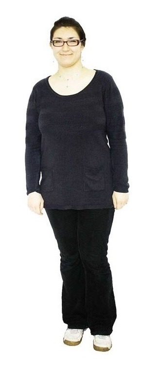
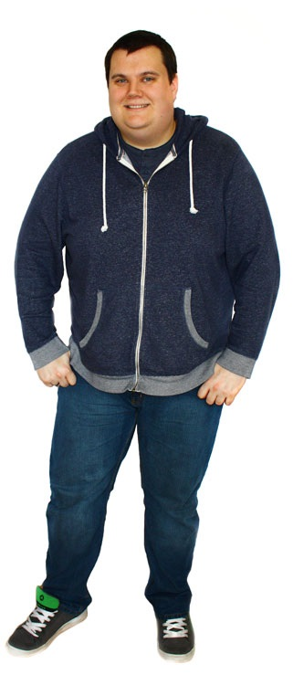

People
Meet our expert team
The Media Lab team
We are all unique but we share the same passions: to create, learn and collaborate. We're focused and enthusiastic, there is nothing we can’t conquer together! Our backgrounds and knowledge are diverse, but you can find out a little bit more about each of us by giving one of us a click below

Irina Petrova
Irina is a true Wonder Woman in action. Her special powers include being super organised and not resting until she gets the job done.
She also has some secret powers as well: HTML5, CSS3, Photoshop and aligning are the skills she treasures most, whilst also learning to take control of C#, JavaScript and MySQL.
Irina uses her powers in the Lab to produce great visuals and content. Her personality comes out in everything she does: be that big or small projects.
FYI: She makes an awesome sandwich and refreshing frappe, slays a couple of vampires or can join the Night’s Watch (Though not all at the same time).
×
Ian Beresford
With his unhealthy obsessions of dismantling things, Pusheen the cat, and traveling (Germany specifically) Ian is most at home designing at the front end, owning to his severe coding allergies. He enjoys spending his time ensuring that sites he's working on are crammed with only the finest content whilst at the same time looking fabulous!
Ian's main skills include both Fireworks and Photoshop, as well as dabbling in Dreamweaver, HTML5, and CSS3, though sometimes he thinks you can't quite beat the old fashioned pencil and paper.
His love of design runs much deeper, with one of his biggest passions being theme park and attraction design. When not preoccupied with work or driving around Germany you'll usually find Ian geeking out over the most random of things, with Disney Parks poster art being the latest craze.
Interesting fact: Get him talking about Disneyland's Space Mountain. You'll be there all day.
You can find Ian's personal site at ianberesford.com
×

Joel Stanford
Joel regularly enjoys breaking things from computers to code and even cats (how do you 'break' a cat? Pro tip: never let them play with sticky tape!).
Thankfully he also loves figuring out how put them back together and get them working again. He naturally blames it on all that Lego as a child, but it seemingly made him a great developer and programmer too.
Joel is also our 'Lab Manager' to help keep everything running smoothly in the lab, and to steer the good ship lollipop.
He can usually found buried deep in code wailing out the hits of the 80s thinking nobody else can hear him, or touring around the world for the latest fix of adrenaline on a terrifying new rollercoaster.
Code, coasters, cats, cookies and Coca-Cola (not coffee!)... that sums him up!
You can find Joel's personal site at joel.sh
×